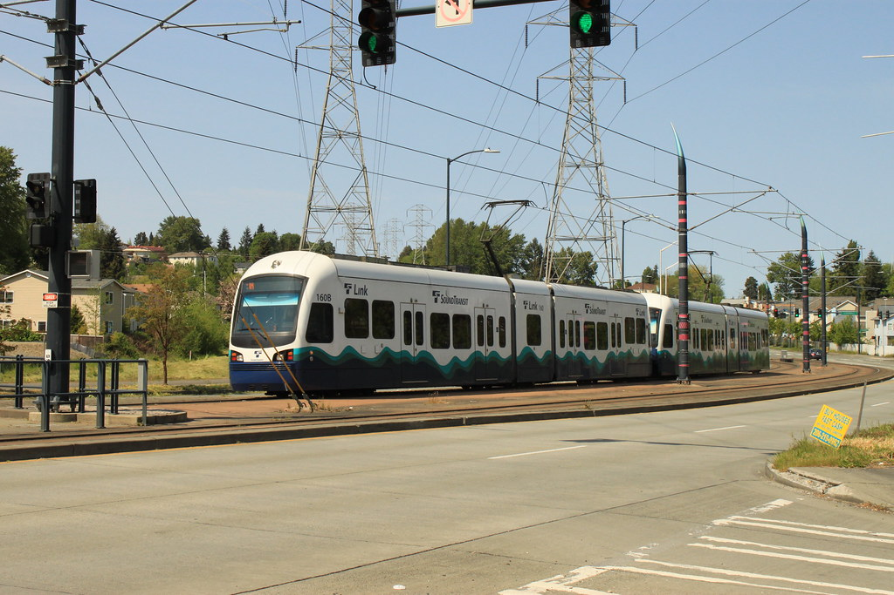

The Case for More Even Distributed Housing Development

This project was inspired by an article I read in the Seattle Times in November of 2021, identifying the large discprepancy in new housing construction within Seattle. This was a phenomenon I had witnessed firsthand as a long time resident of the city in its South End, noticing how the Light Rail stops located throughout the Rainier Valley had slow to little development. In contrast, the recently opened light rail stations opening on the North End were bustling with new investment.
Without any research, one could look the historically racial and economic differences in these communities and point a finger at instituional racism, but I wanted to find out what other factors may be at play for this gross difference in new housing development. In a city that is in dire need of new housing for all incomes, why are certain areas that are designed and desired as dense multi-family housing lagging behind others?
This project looks at the many factors that has influenced this apparent uneven development, and hopes to inform others of the positive and negative relationships that exist within our city and it's developers, and the people who make things work on the ground, behind the scenes, in our communities.